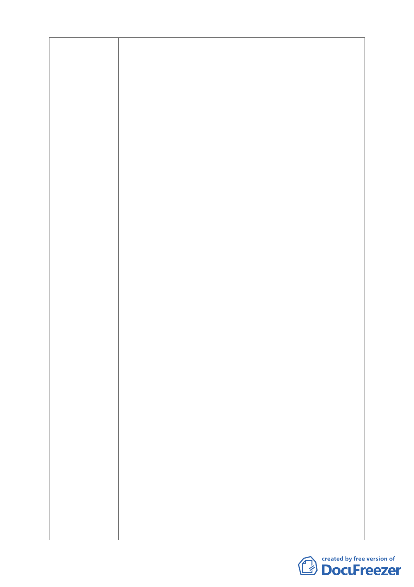

或累積開發面積一公頃以上，即應實施環評
6.「社區遊憩設施、社會福利設施、人民團體、文康設施、日常用
品零售業、一般零售業甲組、飲食業」部分：依據「認定標準」第
25 條第 7 款「新市區建設」，位於山坡地之區位，申請開發或累積
開發面積一公頃以上，即應實施環評
五、未依都市計畫法第十九條辦理說明會
六、主、細計劃應分開辦理
主要計畫書不符都市計畫法第十五條相關規定，細部計畫書不符都
市計畫法第二十二條相關規定，未依民國 89 年農委會水保局解釋
函「所謂坡度分析應根據自然地形做分析」，明顯違反法規規定
七、應實施交通影響評估
1.缺現況交通調查資料
2.細部計畫缺交通計劃
八、高開發量，未扣除 50％以上之道路、廣停、公園及滯洪沉砂
池等公共設施
1.全案無公共設施用地 100％作為可建地
2.建蔽率 30％、容積率 160％
台灣是民主自由的社會，也可能是太自由了以致眾口爍金積非成
60 陳慧玲 是。回想八八水災時慈濟出錢出力為鄉民重建家園，可是換來的卻
是數不盡的辱罵和責難，直到文茜週報明察暗訪終於說了公道話，
她說慈濟人加油，她說慈濟人做功德 40 幾年在自己的國家卻遭逢
最大的責難，只是上人說不能回嘴做就對了，以至慈濟人也只能默
默的承受。少數人用嘴巴做環保卻更容易被看到，好比此地明明是
平地確被說成是濕地，淹水的水系不在此又被說成是禍源，保護區
的規格和條件早在人口稠密的內湖被改變了，可是也被說成慈濟人
在亂開發。個人家住內湖 40 年見證了內湖從一片荒涼到繁華，合
情合理的建設，在文明的社會卻一再的被阻撓，請大家捫心自問反
對者是為選票知名度在努力還是為創造此地有效而高度利用而努
力。請相信只要慈濟放棄了這塊地將會被人以蓋豪宅的方式放在這
裡。
慈濟功德會做了很多的好事，可是並不代表就可以做壞事，做了一
61 官翰煒 件壞事也就會把所做的好事給抹滅。慈濟所做垃圾收集分類等是一
般居民的環保，真正積極的環保應該是停止保護區的開發。即使做
了上千上萬件的好事，卻成為傷害卓家三條人命的幫兇的話，所做
好事又有何用。所提陳文茜確實對慈濟讚賞有佳，可是她也沒說慈
濟可以在保護區做如此錯誤的開發。依慈濟所提開發模擬與現在的
建蔽率幾乎沒有兩樣，可預見他就是要想蓋志工大樓、兒童醫院。
慈濟在 11 月 3 日於康寧里召開說明會，不到十分鐘我就被請出來
了，因為他說只針對慈濟人邀請來的人，這樣又怎能說是說明會
呢？且其又沒會議紀錄如何承認是說明會。郭坤祥里長的撤簽也說
明他支持的是整個遠景的規劃而非慈濟的開發。請委員也認真思考
本案程序是否違法的問題，否則我們大湖里秀湖里居民也不排除提
出團體的訴訟。
62
陳樹山
我們相信慈濟是守法的，11 年前慈濟意要蓋醫院時本人也是持反
對意見，後來經逐步了解和參加會議發現一詭異現象，就是台北市
很多保護區的變更案都未見環保團體來反對，唯獨本案就有一大堆
-7-